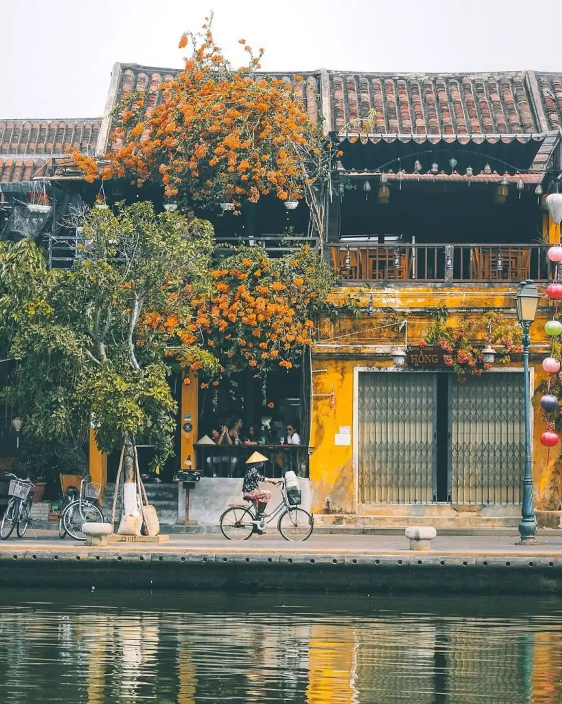
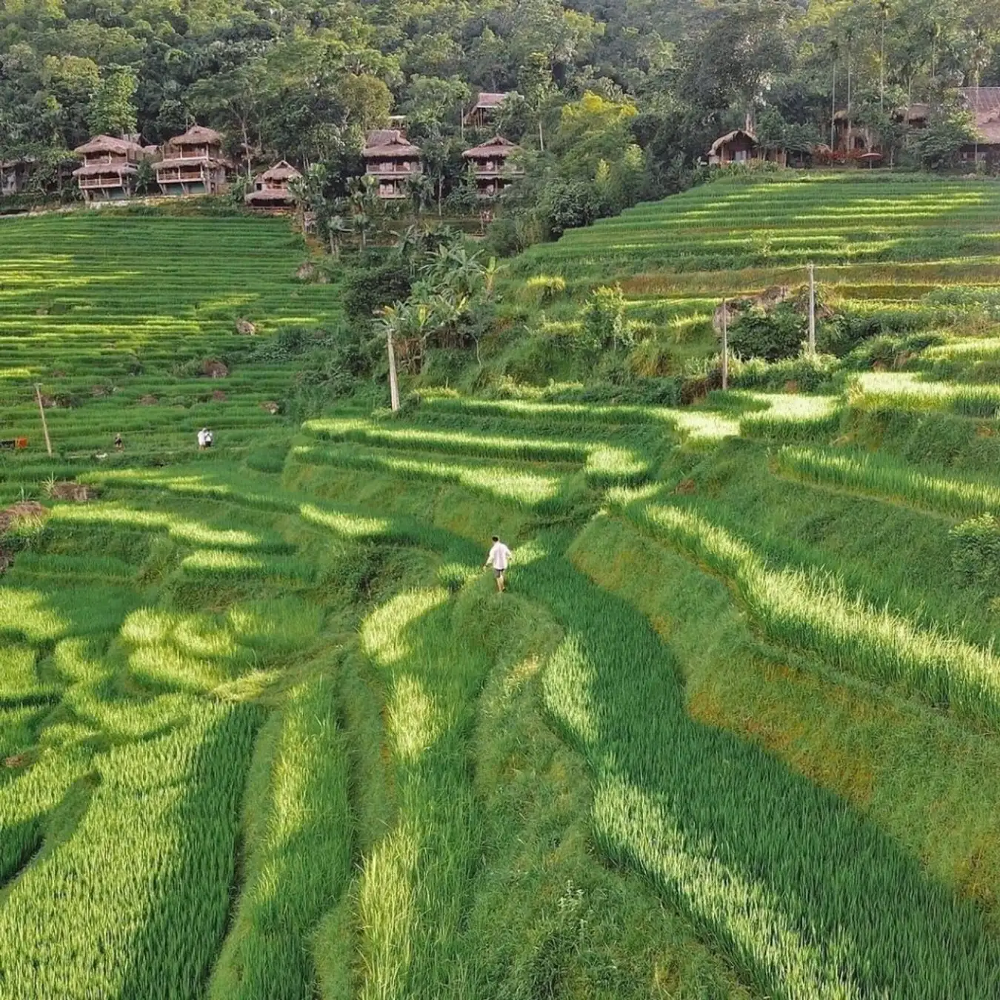

Why I Love Traveling?
Traveling not only helps me relieve stress but also brings new perspectives on culture, people, and food around the world.
Top 3 Dream Destinations
- Trang An, Ninh Binh: The magnificent limestone mountains and the dreamy winding river.
- Hoi An, Da Nang: This town right at the estuary holds a lot of poetic charm.
- Pu Luong, Thanh Hoa: The cool air and the terraced fields on the hillside are incredibly peaceful.
Highlight Gallery
1. Trang An, Ninh Binh
2. Hoi An, Da Nang

3. Pu Luong, Thanh Hoa

Learn More
If you are also passionate about traveling, check out the travel guide at Top 8 places in Vietnam.